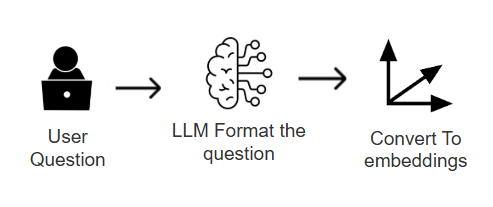
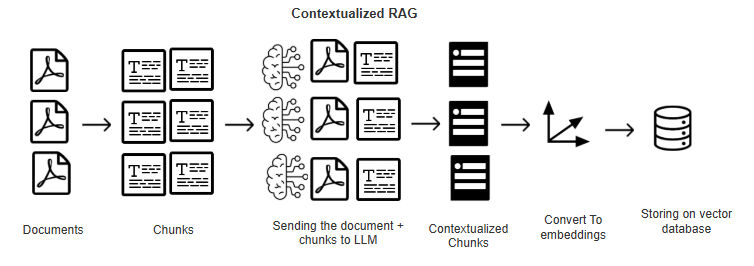
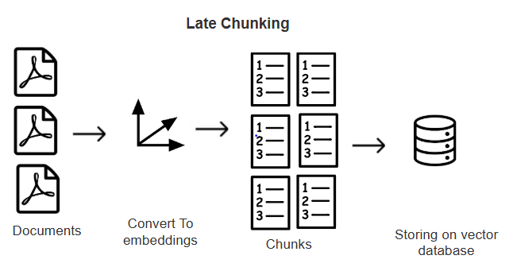

Advance RAG Methods
Problems in Simple Approach
When separting to fixed token chunks, it loses the relavent infomration ex: 1 paragraph 250 word and 2nd paragraph 300 words, if we set chunk size to fixed we are unable to capture meaning Numerical data representation will be wrong
Tip for RAG
Before searching relavent vectors need to format user Question for better Retrival from vector database

Different Way for RAG
1. CAG (Cache Augmented Generation)
RAG - Loads only the relavent information to the LLM
CAG - It loads whole data into model - now LLMs have large context windows
2. GraphRAG
High Accuracy but need to do multiple LLM calls, this makes it slow
- Microsoft Graph Rag - Requires a API key Ollama is not supproted yet
- neo4j
3. LightRAG
- Much more effective than GraphRAG
Optimized Ways to do RAG
1. Contextual Retrieval

2. Late Chunking

Image To Text conversion in RAG
1. OCR (Optical Character Recognition)
2. ColPali
Vision LLM : Can capture the text in the images : multimodels
KAG (Knowledge Augmented Graph)
It built on OpenSPG engine solve RAG and GraphRAG limitation
LLM AI Agents frameworks
- CrewAI :: Agents, Crew, Process, Tasks
- PydanticAI
** Pydantic is used for data validation ex: name : str = "Manith"
- Phidata
- Autogen
- LlamaIndex
- LangGraph
DSPY (declarative self improving python)
- Not LLM prompting, programtically prompting
RAPTOR (Retrival Abstractive Processing Tree Organized Retrieval)
RAPTOR is RAG framework RAG - Relies on chunks RAPTOR - Bottom up approach -> Clustering and summarizing chunks
ColBERT (Contextualized Late Interaction over BERT)
- Efficent than traditional RAG
** Research papers are available for above every method with comparision and evaluations
Evaluating RAG systems
RAGAS (Retrieval Augmented Generation Assessment)
Metrics
- Faithfulness
- Context Recall
- Answer relavency